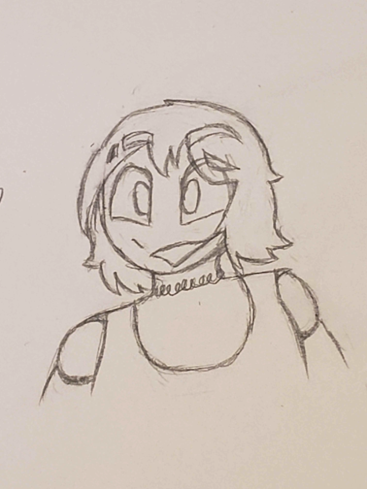

💾 - Luce Centralis - 💾
- age: adult
- gender: woman
- sexuality: lesbian
- species: synth
- role: burnt out
💾 bio 💾
i used to be the host, then that collapsed because having host is a bad idea
has been described as a lightbulb enthusiast
generally likes tech but in the "refuses to own a printer without leaving a gun next to it" way
burnt out sysadmin of the system who occasionally shows up to either be gay with what is starting to be a long list of people or to fix something that blew up
for those curious here is that long list of people: cassie, piper, luna, halley, calliope, amber, fifer and laine all from sterling manor
💾
“You will soon be well, if I do not talk you to death.” ― J.R.R. Tolkien
"I'm supposed to be on bed rest but that is practically an affront to my very existence." — Star Trek: Discovery
💾